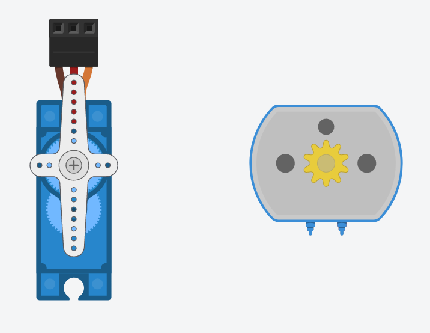

Como podemos imaginar, además de controlar las luces de nuestra casa existen muchos otros elementos (persianas, sistemas de seguridad,...) que también podemos controlar.
En esta actividad te proponemos el uso de un servomotor para el control de objetos móviles (persianas, puertas,...)
1. Activamos los motores
Un servomotor es un dispositivo electromecánico que se utiliza para controlar el movimiento angular preciso en una variedad de aplicaciones. En el contexto de Arduino, un servomotor es un componente que se puede controlar mediante una placa Arduino para realizar movimientos específicos.
Los servomotores utilizados con Arduino son generalmente servomotores estándar que se controlan mediante señales de pulso PWM (modulación por ancho de pulso). La placa Arduino envía una serie de pulsos PWM al servomotor para indicar la posición deseada. Estos pulsos determinan el ángulo al que el servomotor debe moverse.
En el siguiente video encontrarás todos los secretos para controlar un servomotor con tu placa Arduino:
Opción A: Motores
Hay algunas diferencias entre un servomotor y un motor de corriente continua. Estudiando ambos dispositivos podrás entender la utilidad de las señales digitales.
¿Serías capaz de explicar las características de cada uno de ellos?

Opción B: Controlando un servo
Ahora que ya has entendido como el funcionamiento de un servomotor, ¿serías capaz de crear un proyecto utilizando este componente?
Añade un LED para que cuando gire el servomotor se encienda de forma intermitente. Puedes configurar el giro de motor entre 0º y 180º con una espera de 2 segundos.